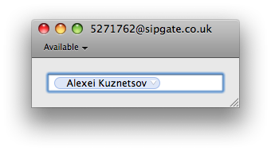
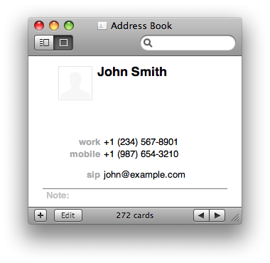
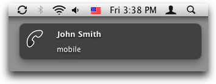

Telephone is a VoIP program which allows you to make phone calls over the internet. It can be used to call regular phones via any appropriate SIP provider. If your office or home phone works via SIP, you can use that phone number on your Mac anywhere you have decent internet connection.
Telephone is really easy to use.

Phone numbers and SIP addresses from Mac OS X Address Book application can easily be called with Telephone. Use email field with custom label “sip” to store contact’s SIP address.

Notifications with Growl.
